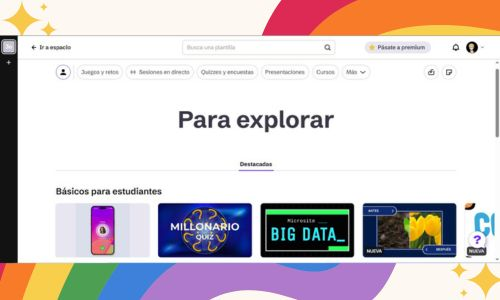

¿Que es Genially?
Genially es una plataforma en línea que permite a los usuarios crear contenido digital interactivo y animado, como presentaciones, infografías, imágenes interactivas, juegos y más, sin necesidad de conocimientos de programación. Es una herramienta versátil que se utiliza tanto en educación como en marketing y comunicación.
¿Para que sirve?
Genially es una herramienta en línea que permite crear contenido interactivo y animado, como presentaciones, infografías, juegos, imágenes interactivas y más, sin necesidad de conocimientos de programación. Facilita la elaboración de materiales atractivos y dinámicos para diversos fines, incluyendo educación, marketing y comunicación empresarial.
Como lo puedes usar:
Genially es una herramienta en línea que permite crear presentaciones interactivas, infografías, gamificaciones y otros contenidos visuales atractivos. Para usar Genially, primero debes registrarte en su sitio web y luego puedes elegir entre una variedad de plantillas o empezar desde un lienzo en blanco. Una vez que hayas seleccionado o creado tu diseño, puedes agregar elementos interactivos como botones, animaciones y videos, y luego compartirlo con otros a través de un enlace o descargarlo en diferentes formatos.

Esta es la pagina para iniciar secion en genially, esta a diferencia de Mentimeter, no esta en ingles, asi que facilita el inicio de secion.

Aqui como en las otras, ya puedes empezar a hacer tus documentos y puedes empezar a usar lo que te ofrece la app.
¿Quien creo genially?
Genially fue creada por tres socios: Juan Rubio, Chema Roldán y Luis García. Juan Rubio es el CEO y cofundador de la empresa. Chema Roldán es el director técnico (CTO) y Luis García es el director creativo (CMO). La plataforma nació en 2015 como un proyecto interno de la agencia de comunicación que Juan Rubio dirigía.
¿Como ha ayudado a la comunidad digital?
Genially ha tenido un impacto significativo en la comunidad digital al proporcionar una herramienta fácil de usar para crear contenido interactivo y multimedia sin necesidad de conocimientos técnicos avanzados. Esto ha permitido a individuos y organizaciones de diversos sectores, como la educación y las empresas, mejorar la comunicación, el aprendizaje y el compromiso.
¿Que se distinguia de las demas aplicaciones?
Genially se distingue de otras herramientas similares principalmente por su foco en la interactividad y la animación, permitiendo crear contenido visualmente atractivo y dinámico que va más allá de las presentaciones estáticas tradicionales. A diferencia de herramientas como Canva o Piktochart, Genially está diseñado para crear experiencias digitales interactivas que pueden integrarse en páginas web o mostrarse online, en lugar de enfocarse en diseños imprimibles.